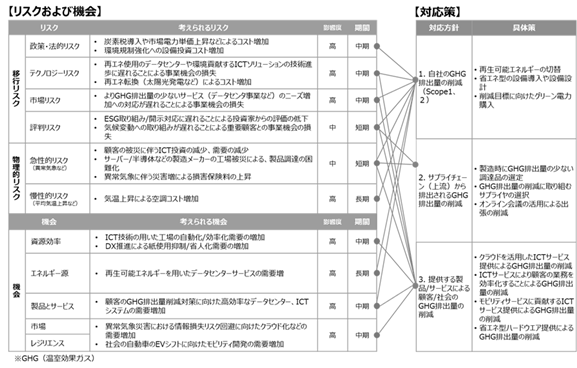
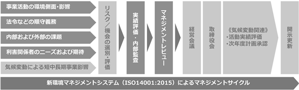

文中の将来に関する事項は、当連結会計年度末現在において、当社グループが判断したものであります。
（1）会社の経営の基本方針
当社グループは、「ICT技術で未来を創る企業へ」を経営の基本方針とし、プロフェッショナル集団として、グループ社員一人ひとりが先進性・誠実性・信頼性を高め、常に成長のための自己改革を行い、ICTを活用した新しい価値を創造してまいります。また、株主の皆様、お客様、パートナー企業の皆様の期待に応えるべく、当社グループの持続的成長・発展を通じて、サステナブルな未来創りに貢献します。
（2）目標とする経営指標
当社グループは、「持続可能な社会の実現」と「当社グループの持続的成長」を目指し、2022年３月に３ヵ年の中期経営計画を発表いたしました。2025年１月期の事業目標は売上高565億円、経常利益63億円と設定いたしました。
（3）中長期的な会社の経営戦略
当社グループは、基本方針に定めた「ICT技術で未来を創る企業へ」を当社グループの将来像として定義し、持続的成長・発展を通じて、サステナブルな未来創りに取り組み、企業価値を高めてまいります。詳細は、2022年3月に発表しました「2023年1月期－2025年1月期の3カ年中期経営計画」をご参照ください。
※URL：https://www.cec-ltd.co.jp/ir/2022/08/plan2022-25.pdf
① 事業力の強化
・環境変化に強く、柔軟なビジネス構造への進化・深化
・主力事業の持続的成長と注力事業の領域拡大・推進
・DX戦略・全社横断の事業シナジー創出
② 人材・技術力の強化
・競争力の源泉である人材の積極的な採用・高度化・再配置
③ 経営基盤の強化
・持続的な成長を支える経営基盤（ESG活動推進・社内DX推進）の強化
・財務基盤の維持・向上
・積極的な成長投資と株主還元の強化による持続的な企業価値向上
（4）会社の対処すべき課題
当社グループは「ICT技術で未来を創る企業」を目標に、2023年１月期から2025年１月期を対象とした３ヵ年の新中期経営計画を発表し、「事業力の強化」、「人材・技術力の強化」、「経営基盤の強化」を基本方針として、「サステナブルな社会の実現」と「持続的成長」を目指し、事業活動を通じた社会課題・産業課題の解決に取り組み、以下の経営課題に対処してまいります。
① ICT技術やICTサービスの提供とサステナブルな社会実現への貢献
・脱炭素社会の実現
・労働力不足の補完や解消
・サイバーリスク高度化への対応
・「2025年の崖」対応
・業界や顧客の固有課題の解決
・DX実現のサービス開発と提供
② プライム企業に求められる経営の高度化・効率化
・ガバナンス強化
・事業ポートフォリオの最適化
・社員数純増転換とDX人材の育成
・ダイバーシティや働き方改革の推進
・継続的な品質向上と生産性向上
・不採算プロジェクト撲滅施策推進による収益の安定化
・社内DXの推進
・グループ経営及びグループシナジーの強化
当社は、これら経営課題に着実に対処し、当社グループの持続的成長・発展を通じて、サステナブルな未来創りに取り組んでまいります。
当社グループのサステナビリティに関する考え方及び取り組みは次のとおりであります。
なお、文中における将来に関する事項は、当連結会計年度末現在において、当社グループが判断したものであります。
（1）ガバナンス
当社グループは、サステナビリティへの取り組みを推進するため、サステナビリティに関して取締役会等で適宜協議を行っております。第56期において、具体的には、2030年に向けた会社のありたい姿およびこれを実現するための事業ポートフォリオの見直しを中心としたサステナビリティに関する事項について検討等を実施しております。
（2）リスク管理
当社グループは、経営に対して大きな影響を及ぼすリスクに適切かつ迅速に対応するため、経営会議において、報
告・対策の検討を行っており、対処すべき重要なリスクが特定された場合は取締役会等において対策の協議・報告を
実施できる体制を整備し、リスクの低減、未然防止等を図っております。主な重要リスクは「
に記載のとおりとなります。
上記、ガバナンスおよびリスク管理を通して識別された当社グループにおける重要なサステナビリティ項目は以下のとおりです。
①気候変動
②人的資本
①気候変動への対応
1) ガバナンス
当社では、気候変動に向けた対応はサステナビリティ経営における重要課題の一つと認識しており、2020年より
ISO14001認証取得を開始いたしました。当環境マネジメントシステムの体制として、取締役を環境管理統括責任者、
総務部長を環境管理責任者、他ISO14001事務局員で組織しております。本組織は気候変動を踏まえた環境活動の推
進・統括を目的とし、リスク及び機会を監視し、経営会議を経たうえでその内容を取締役会へ年2回以上報告してお
ります。
経営会議および取締役会で提示された指示事項については、ISO14001認証取得をしている環境マネジメントシステ
ムにより、環境管理統括責任者、環境管理責任者から各事業部門に展開し、継続的な改善に努めております。また、
今後は本取り組みの適用範囲をグループ会社に拡大してゆくことを検討して参ります。
2) 戦略
当社では、グループ会社を含む事業における気候変動に関するリスクおよび機会の洗い出しを行い、それらが戦略
及び財務計画に及ぼす影響について定性・定量的に評価しております。また、外部環境の変化や様々な状況下を考慮
するため、2℃未満シナリオと4℃シナリオの双方において分析を実施しております。
・2℃未満シナリオ：気候変動の影響を抑制するためにカーボンニュートラル実現を目指した取り組みが活発化したシナリオ。1.5℃目標達成に向けた各種規制強化、市場・消費者の環境意識も高まり、移行リスクが顕在化する。
・4℃シナリオ ：気候変動対策が現状から進展せず、世界の平均気温が産業革命期依然と比較して今世紀末ごろに4℃上昇するシナリオ。異常気象の激甚化や海面上昇などの物理的リスクが最大化する。
3) リスク管理
当社では、気候変動における事業上のリスクを経営会議で管理し、事業リスクに対し迅速な報告や経営判断を可能としております。

また、気候変動を含む環境リスクの特定・評価につきましては、ISO14001認証取得をしている環境マネジメントシステムの仕組みを活用し実施しております。特定したリスクへの対応つきましても環境マネジメントシステムに基づいて実施・管理を行っております。

4) 指標及び目標
当社では、気候関連問題が経営に及ぼす影響を評価・管理するうえで温室効果ガス排出量を一つの指標と捉え、GHGプロトコルに基づき当社単体として算定を実施いたしました。目標として2016年度基準排出量(Scope1、2) 9,282t-CO2から2030年度に46%以上の削減を掲げており、2023年度には神奈川第一データセンター、さがみ野システムラボラトリ、宮崎台システムラボラトリの電力契約を実質CO2フリーのものに変更したことで45.4%の削減を達成しております。引き続きCO2排出量の削減を進めるとともに、2050年のカーボンニュートラルという高い目標に向け削減に努めてまいります。
〈当社単体の排出量実績と2030年の目標値〉
|
データ年度 |
2016年度 |
2023年度 |
2030年度目標 |
|
|
CO2排出量 |
Scope1+2 |
9,282 |
5,068 |
5,012(▲46%) |
また、2023年度より対象を当社グループ全てに拡大し、Scope1～3全ての温室効果ガス排出量の管理・削減を
進めてまいります。グループ全体としての算定結果や取り組みは順次、コーポレートサイトにて開示を予定して
おります。
②人的資本及び多様性への対応
当社グループでは、経営戦略と連動し、会社のみならず従業員の持続的成長が競争力の向上につながると考え、優れた人材の確保と成長、パフォーマンスを最大化することを目指しており以下の取組を実施しております。
＜人材確保・人材育成＞
急激に変化する外部環境を適切に捉え、成長戦略を牽引する個性や強みを持ったプロフェッショナル人材の確保を主目的として、中途採用を推進しており、更にその属性はもちろん、価値観等によらない多様な人材が活躍し続けることができるような風土・環境整備を進めております。
また、従業員が持続的成長をし続けるために、人事制度を抜本的に見直し、役割を重視した制度へ変更するとともに、チャレンジが評価に反映されるよう目標管理制度を変更し、自分の成長を自分で描く、自律した人材の育成を目指します。従業員が自身のキャリアを主体的に描き、会社がこれを積極的にサポートする環境を整えることで、人の成長が会社の持続的な成長に繋がる仕組みを構築しております。
当社は、従業員の成長とキャリア形成を重視し、以下の取り組みを行っております。
・役割の明確化と等級の圧縮
期待する役割を明確にし、等級を圧縮することで、従業員がスピード感をもってキャリアを築ける環境を整備しました。
・複線型のキャリアマップの提供
新たに専門職を創設し複線型のキャリアマップを示し、個々の適性や価値観に応じたキャリアプランを描けるようサポートしております。
・新しい人材育成の考え方の導入
自律人材育成の観点から、目標管理シートを見直し、会社が定める目標設定から従従業員が自ら目標とその達成レベルを申告し、上司と面談の上共に合意し決定するプロセスといたしました。
・従業員主導の成長と学び
従業員には自分が目指すべき達成レベルを自己決定し、挑戦と学びを通じて成果を上げることを奨励し、失敗から学びを得て成長できる環境を提供しております。あわせて、多様化・複雑化する環境の変化に対応していくため、階層別・スキル別の期待される役割に沿った教育を体系的に実施してDX人材やPM人材を養成し、採用時から全社で統一した育成を実践することで人材強化を行うほか、スキルチェンジ支援や若年層の底上げを図って参ります。
＜健康経営＞
当社が事業を進めていくうえでの最大の資本は「人材」であり、「経営戦略」実現の源泉も人材となります。
従業員の健全な労務提供がなされることにより、事業運営が可能となり、さらに顧客や地域、社会全体の発展に貢献し、ひいては中長期的に地域・社会における価値を高め持続的な経営を実現することができます。よって、最大の資本である従業員の健康を担保することは重要な経営課題であり、経営戦略のひとつとして「健康経営」に取り組んでおります。
健康経営体制を整備するとともにメンタルヘルス不調等のストレス関連疾患の発生予防・早期発見・適切な対応および再発防止策、またワークライフバランスへの配慮・対応労働時間の適正化や生活時間の確保、コロナ禍で希薄になっていた従業員間のコミュニケーションの促進を図り、職場環境の改善に努めたこと、などが評価され「健康経営優良法人認定制度」に基づく健康経営優良法人(2024）の認定を受けました。
＜ダイバーシティ&インクルージョン＞
当社は、多様な価値観をもった従業員がお互いを理解し、助け合い、様々なアイディアが飛び交い互いに切磋琢磨できる企業であり続けたいと考えます。そのために、様々な事情を抱える従業員がいる中でも、柔軟に就業できる・就業しやすいと思ってもらえる環境整備に努めております。
当社は2021年2月1日～2026年1月31日までの5年間で女性従業員割合を25%以上とすることを目標として、風土・意識醸成といったソフト面や制度・ルールなどのハード面において様々な施策を立案・検討し、女性従業員一人ひとりが能力や経験を充分発揮・活躍できる環境を目指しております。
更に男性の育児休業を推進するため「プレパパ研修」、育休取得者への「仕事と育児の両立講座」、介護セミナーの実施など育児・介護の両立支援を実施するとともに、全社向けにダイバーシティ&インクルージョンについて考える研修を実施しダイバーシティ＆インクルージョン推進の必要性を周知するとともに互いが助け合える環境の醸成を推進しております。
なお、管理職に占める女性労働者の割合、男性労働者の育児休業取得率、労働者の男女の賃金の差異についての実績につきましては、「
・女性活躍推進
当社は、女性従業員割合を25%以上、女性管理職比率を12％以上に引き上げる目標を掲げており、着実に進捗しております。女性社員の比率が高まり組織内で長期にわたり働くためにフレキシブルな労働環境を促進し、女性社員が家庭と仕事を両立しやすい環境を整備しております。
また、女性従業員割合の実績については以下の通りです。
（53期）19.5% （54期）21.１% （55期）23.0% （56期）23.9%（2024年1月現在）
今後も、多様性を尊重した職場環境構築を進めるためにワークライフバランスのさらなる推進、女性管理職候補となる幹部職育成・女性管理職比率向上を目指すことを目標として、風土・意識醸成といったソフト面や制度・ルールなどのハード面において様々な施策を立案検討し、女性従業員一人ひとりが能力や経験を充分発揮・活躍できる環境を目指しております。
・男性育休の推進
男性育休の推進については、社長自ら取得推奨のメッセージを発信するとともに管理職の取得事例および取得を後押しした上司についてのインタビューを社内周知するとともにガイドブックの配布、ダイバーシティ&インクルージョン講座の展開、プレパパセミナーの開催など男性が育児休業を取得する風土づくりを実施することにより男性の育児休業取得者は確実に増えております。
・介護に向けた取組み
高齢化社会をむかえるなかで、介護については、突然始まるケースも多く誰もが仕事と介護の両立を求められる可能性があると考えております。そのため、いざというときのため①利用できる制度・サービスを知る②介護についての知識を身に着け、備える③「自身の将来」や「家族の介護」について考える ことを目的として2020年（52期）から介護セミナーを開催しております。また、制度利用についての広報としてガイドブックの展開や社内報を通じての制度紹介などをしております。なお、今期より平均年齢が40歳近くなっている当社では介護による休職・退職は会社の経営にとっても大きな影響あることを管理職にも認識してもらうため管理職向けの介護セミナーも実施しております。
・障がい者雇用
当社は、「多様な人材の強みを最大限に活かし、しなやかで創造的な組織をつくり、革新につながる」を理念とし、その一環として積極的に障がい者の雇用機会を提供しております。また、我々は職場環境のアクセシビリティを向上させ、バリアフリーなオフィス環境を整備し、在宅勤務においても必要な支援を提供するなど、障がい者の方々が働きやすい環境整備に取り組んでおります。そして、障がい者従業員が独自のスキルと経験を活かして、各部門からの業務依頼（グループ内の名刺作成、社内報の作成、各種イベントのポスター作成など）に対して質の高い成果物を各部門にフィードバックして会社の持続的成長の一翼を担っております。
なお、当社は2024年1月末時点で2.64％とし法定雇用率を遵守しております。
当社グループの事業活動その他に関するリスクについて、投資家の投資判断上、重要であると考えられる主な事項は以下のとおりであります。当社グループは、これらのリスク発生の可能性を認識した上で、発生の防止および発生した場合の適切な対処に努めてまいります。
なお、文中における将来に関する事項は、有価証券報告書提出日（2024年４月23日）現在において、当社が判断したものです。
（1）プロジェクトマネジメントに関するリスク
当社グループでは、様々なプロジェクトを進めていくうえで、ますますプロジェクトマネジメントの重要性が高まっており、その強化が不可欠でありますが、顧客とのコミュニケーションギャップを含めた仕様の曖昧さによる当初見積からの乖離による納期遅延、想定外の作業工数・リカバリーコストの発生・協力会社への外注コストの増大等が発生することや、法令・社会情勢の変化等の外部要因によりプロジェクトの進行が阻害されるリスクを完全に回避することができないことがあり、結果としてプロジェクトの採算が悪化し、当社グループの業績、財務状況に影響を及ぼす可能性があります。
それに対し、受注前の見積段階において、プロジェクト担当の事業部門、営業部門、品質管理部門における見積検討会の実施、プロジェクト実施段階における予算/実績の乖離モニタリングやプロジェクト監査会での実行状況のチェック、プロジェクト品質向上のための各種研修を行い、プロジェクトマネジメントに起因するリスクの低減に努めており、これら取り組みに対し内部監査部門による業務監査を行うことにより、リスク対策の定着をはかっております。また、取締役会・経営会議などで、特に業績、財務状況に影響を及ぼす可能性が高いプロジェクトについて、モニタリングを行ってリスクの低減に努めております。
（2）人材の確保・育成に関するリスク
当社グループが事業を遂行するうえで重要なことは、高度な技術力やノウハウなどを兼ね備えた優秀な人材を確保することであります。しかしながら、経済情勢や雇用情勢などに加えて人材獲得競争の激化などにより、優秀な人材が確保・育成できない場合、当社グループの業績、財務状況に影響を及ぼす可能性があります。
それに対し、採用担当者の増員など採用体制の増強、社内における教育体制の充実と社外での教育機会の奨励、従業員のモチベーションを高めるインナーブランディングの強化、健康保険組合との協働による健康経営への取り組みなど、人材に関するリスクの低減に努めております。
（3）情報セキュリティ・サイバー攻撃に関するリスク
当社グループでは、業務遂行上、顧客が有する様々な秘密情報を取り扱う機会がありますが、国際的な情勢によりサイバー攻撃等の外部からの不正アクセス等による情報漏えいリスクや業務の中断リスクが更に高まっており、また当社グループ内でも個人情報を含む様々な情報を保有し社内外とやり取りをしているため、個人情報や重要秘密情報の漏えい等の情報セキュリティ事故が発生した場合、損害賠償請求や信用失墜につながり、当社グループの業績、財務状況に影響を及ぼす可能性があります。また、サーバーやネットワークに対するサイバー攻撃等によりシステムやネットワークが停止した場合においても同様に、損害賠償や信用失墜につながり、当社グループの業績、財政状況に影響を及ぼす可能性があります。
それに対し、各情報セキュリティリスクに対応するセキュリティ機器やサービスの導入、情報セキュリティに関する規程類の整備、日本シーサート協議会など情報セキュリティに関連する団体への加入などによる外部組織との連携強化、当社データセンター等におけるISO/IEC 27001の認証やプライバシーマークの取得など適切な管理、情報セキュリティ教育の実施、インシデント検知と発生時対応のためSOC（Security Operation Center）の活用および、CSIRTである「CEC-SIRT（CEC Security Incident Response Team）」を組織して情報セキュリティ・インシデントへの対応力を強化し、リスクの低減に努めております。
（4）コンプライアンスに関するリスク
当社グループは、その事業活動において国内外の法令・規制の適用を受けており、それらを遵守し、事業を展開するうえで、意図せず法令等に抵触する事態が発生した場合、損害賠償請求や信用失墜等により、当社グループの業績、財務状況に影響を及ぼす可能性があります。また、当社グループの従業員の不正、長時間労働やハラスメントといった人事労務問題に起因する社内ルール違反や法令等に抵触する事態が発生し、調査費用の計上や損害賠償請求、従業員の意欲低下などの当社グループの業績、財務状況に影響を及ぼす可能性があります。
それに対し、顧問弁護士や社会保険労務士との相談・コミュニケーションの増強、法令情報取得のための機会の拡大、「シーイーシーグループ企業行動指針」「シーイーシー社員行動基準」を制定し、コンプライアンス遵守体制の強化と企業倫理の向上と法令・社内規程等の遵守を徹底させ役職員の意識向上を図っております。また、コンプライアンス教育を全社員・階層別に実施、内部通報窓口を社内と社外とに二重設置するなど、コンプライアンスに関するリスクの低減に努めております。
（5）顧客・経済情勢に関するリスク
当社グループの売上高に占める上位10社の比率は約４割程度であり、製造業向けの売上合計は、約４割を占めております。安定顧客に対する売上比率、および特定業種に対する売上比率が高いことは、当社グループの強みでもありますが、経済情勢の変化に伴い顧客の事業環境が変化した場合、当社グループの業績、財務状況に影響を及ぼす可能性があります。
それに対し、独立系の強みを生かした新規顧客の開拓、独自製品の拡販戦略、既存顧客の深耕による事業拡大、営業企画部を設置し部門横断の「クロスセル」をさらに推進し、顧客・経済情勢に起因した影響に対するリスクの低減に努めております。
（6）投資に関するリスク
当社グループは事業拡大や競争力強化のため、設備の充実や、新規事業の立ち上げなどの様々な投資を行っております。しかしながら、社会情勢の変化や景気悪化などにより、投資案件が計画どおりに進まず当初見込んでいた利益が得られない場合や想定外の費用が生じることがあり、当社グループの業績、財務状況に影響を及ぼす可能性があります。
それに対し、投資効率を高めるため、事前に投資効果やリスク等を十分に検討し、設備投資に対する計画を策定した上で投資を実施し、投資に関するリスクの低減に努めております。
（7）感染症や大規模災害に関するリスク
当社グループは、新型コロナウイルス感染症（COVID-19）等のパンデミックや大規模災害の発生、長期にわたる電力不足など事業継続に支障が起きた場合、当社グループの業績、財務状況に影響を及ぼす可能性があります。
それに対し、従業員の安全確保及び事業継続のため、災害対策計画や事業継続計画を策定、在宅勤務体制の整備、感染者が出た場合の消毒作業等のルール化、被害の防止・軽減および早期復旧等、危機管理の徹底に取り組んでおり、感染症や大規模災害に関するリスクの低減に努めております。
（8）外注取引に関するリスク
当社グループは、外部の技術力やノウハウ等を活用するため、システム開発等、業務の一部を当社グループ外の企業に委託するなど外部発注を行っております。しかしながら、IT需要の高まりによる発注コストの増大、外部発注先に起因する納期遅延や品質低下に加え、ヒューマンエラー等による情報漏えい事故の発生、同業他社との競合により優秀な外部発注先が確保できない場合、当社グループの業績、財務状況に影響を及ぼす可能性があります。
それに対し、下請法の法令遵守はもちろんのこと、外部発注先の技術力やコスト、財務状況等の信頼性などを総合的に勘案した選定、情報セキュリティ等に関するガイドライン等の策定等を行っており、外注取引に関するリスクの低減に努めております。
（9）環境・気候変動に関するリスク
気候変動の影響と考えられる災害等が深刻さを増す中、世界的な対策が求められている温室効果ガス（GHG）削減について、日本においてもより踏み込んだ対応にシフトしています。
当社グループとしても気候変動問題は、社会課題であるとともに経営の課題の一つと捉えており、急速な社会的意識の転換や再生エネルギーを利用したITソリューションへのニーズの増加もあり、気候変動等に対する社会的要請への対応の遅れが発生した場合、事業機会の損失により当社グループの業績、財務状況に影響を及ぼす可能性があります。
それに対し、GHG排出量削減に目標を設定し取り組んでおり、2030年に2016年度比Scope １、２のGHG排出量を46％削減、2050年に100％削減を目標としております。さらに経営と一体化して進めるため、2022年４月、気候関連財務情報開示タスクフォース(TCFD)に賛同し、管理体制や取り組みをPDCAサイクルで改善して参ります。当社事業所からのGHG削減、ICTサービスで使用するGHGの削減や、ICTサービスを活用した顧客・社会のGHG削減、空調機等の省エネ型設備への更改や再生可能エネルギーの導入等の取り組みを推進することによって、環境・気候変動に関するリスクの低減に努めております。
（10）国際紛争に関するリスク
当社グループは、中国上海において子会社を有し、国外の顧客やサプライヤーからのサービスや製品にかかる取引があります。しかしながら、上海における子会社は小規模でありオフショア開発が主要な事業であり、直接的な海外顧客（主に日系企業への現地展開）との取引量は少なく、またサービスや製品のサプライに関しても、経済安全保障上のリスクが高い国を本拠点とする企業によるサービス等の取扱いは少なく、直接的な影響は大きくありません。一方で、顧客において国際紛争に巻き込まれ、現地工場での操業停止や当該国での市場の閉鎖・撤退等の状況に追い込まれ、業績悪化や計画変更に伴う発注の延期等が発生した場合、また国内のエネルギー供給などに問題が生じ燃料費の高騰に伴う光熱費、特に電気代の高騰が生じた場合、当社グループの業績、財務状況に影響を及ぼす可能性があります。
それに対し、子会社、サプライヤー、顧客との密なコミュニケーション、各種メディアからの情報収集を中心に行い、国際紛争が当社グループに与える影響を分析し、早期に影響を捕捉し国際紛争に関するリスクの低減に努めております。
また、国家によるサイバー攻撃を直接受ける可能性があります。その点については、「（3）情報セキュリティ・サイバー攻撃に関するリスク」において、当該可能性を含めて記載しておりますので、そちらをご参照下さい。
当連結会計年度における当社グループ（当社及び連結子会社）の財政状態、経営成績及びキャッシュ・フロー（以下、「経営成績等」という。）の状況の概要並びに経営者の視点による当社グループの経営成績等の状況に関する認識及び分析・検討内容は次のとおりであります。
なお、文中の将来に関する事項は、当連結会計年度末現在において判断したものであります。
(1) 経営成績
当連結会計年度(2023年２月１日～2024年1月31日)におけるわが国経済は、雇用・所得環境が改善するなかで、各種政策の効果により緩やかに回復しているものの、先行きについては、中国経済の停滞懸念など、海外景気の下振れが国内景気を下押しするリスクとなっています。また、物価上昇・地政学的リスク・金融資本市場の変動等の影響に十分注意する必要があります。
情報サービス産業においては、国内景気の回復が続く中、企業の生産性向上や競争力強化のためDX関連投資は拡大傾向にあり、ビジネス構造改革に向けたシステム刷新やクラウド化対応等、デジタル化のニーズは拡大が見込まれます。特に、ChatGPTを始めとする「生成AI」が急速に普及しており、AIを活用した業務効率化や働き方改革への注目度も高まっています。また、日々高度化するサイバー攻撃に対応するため、サイバーセキュリティ対策の需要は依然として高い傾向にあります。
このような情勢下、当社グループは「サステナブルな社会の実現」と「持続的成長」を目指し、2023年１月期から2025年１月期を対象とした３ヵ年の中期経営計画のもと①「事業力の強化」、②「人材・技術力の強化」、③「経営基盤の強化」を基本方針として事業を推進しました。①「事業力の強化」では、顧客の重点投資領域に沿った提案活動や自社製品サービスの販売強化に取り組み、主力事業及び注力事業ともに伸長し、利益面では過去最高を更新しました。②「人材・技術力の強化」においては、人事制度改定、採用強化や待遇改善、資格奨励をはじめ教育制度の強化を実施いたしました。③「経営基盤の強化」においては、業績連動報酬制度導入によるガバナンス強化を行い、ISO14001の取得拡大によるESG活動推進など、企業価値向上に取り組んでまいりました。
これらの結果、当連結会計年度の業績は、主力事業※1・注力事業※2ともに主要顧客の重点投資領域に沿ったICT利活用提案が奏功し、売上高は531億２千４百万円、前期比49億１千７百万円(10.2％)の増となりました。利益面においては、増収による増益に加え、自社製品サービス の拡販や生産性向上への継続的な取り組みにより、営業利益は63億６千１百万円、前期比19億８千７百万円(45.4％)の増、経常利益は64億９百万円、前期比19億９千６百万円(45.2％)の増となりました。また、親会社株主に帰属する当期純利益は、前年に計上しておりました投資有価証券売却益が剥落した影響により、45億４千１百万円、前期比６億３千７百万円(12.3％)の減となりました。
※１ 主力事業：当社の収益基盤である受託開発をはじめ、ICTインフラの提供及び運用構築事業、車載開発、組込み開発や検証ビジネス等を、当社を支える安定した事業基盤である主力事業として定義しております。
※２ 注力事業：①生産・物流ソリューション ②モビリティサービス ③マイクロソフト連携サービス ④マイグレーションサービス ⑤セキュリティサービス ⑥DXクラウド基盤 の６事業を当社の注力事業として定義しております。
セグメントごとの経営成績は、次のとおりです。
（デジタルインダストリー事業）
主力事業における中部サービスおよび西日本サービスは、製造業顧客の活発なICT投資を背景に、システム開発が堅調に推移しました。注力事業のモビリティサービスでは、MaaS領域のビッグデータ分析やスマホアプリ開発が好調に推移しました。生産・物流ソリューションにおいては、スマートファクトリー関連は投資抑制の影響もあり前年より減少しましたが、物流ソリューションは好調に推移しました。結果、売上高は183億１千３百万円、前期比14億７千９百万円(8.8％)の増となりました。利益面においては、増収に伴う増益により、営業利益は41億円、前期比２億４千２百万円(6.3％)の増となりました。
（サービスインテグレーション事業）
主力事業については、運用を含めたICTインフラ構築案件およびシステム開発が好調に推移しました。注力事業のマイクロソフト連携サービスは、Dynamics 365およびPower Platformの商談数が増加、マイグレーションサービスも、DX推進を背景にクラウド化やセキュリティ強化のための需要増加により好調を維持しました。セキュリティサービスにおいては、仕入販売の減少の影響はあったものの、利益面では第２四半期連結会計期間に計上した自社製品の影響により、引き続き好調に推移しました。結果、売上高は348億１千万円、前期比34億３千８百万円(11.0％)の増となりました。利益面においては、増収による増益に加え、自社製品サービスの拡販により、営業利益は66億６百万円、前期比20億３千２百万円(44.4％)の増となりました。
生産、受注及び販売の実績
① 生産実績
当連結会計年度における生産実績をセグメントごとに示すと、次のとおりであります。
|
セグメントの名称 |
生産高(千円) |
前年同期比(％) |
|
デジタルインダストリー事業 |
18,024,928 |
112.3 |
|
サービスインテグレーション事業 |
30,859,144 |
118.3 |
|
合計 |
48,884,073 |
116.0 |
(注) セグメント間取引については、相殺消去しております。
② 受注実績
当連結会計年度における受注実績をセグメントごとに示すと、次のとおりであります。
|
セグメントの名称 |
受注高(千円) |
前年同期比(％) |
受注残高(千円) |
前年同期比(％) |
|
デジタルインダストリー事業 |
18,390,276 |
107.2 |
3,417,463 |
102.3 |
|
サービスインテグレーション事業 |
34,830,438 |
98.9 |
12,337,208 |
100.2 |
|
合計 |
53,220,715 |
101.6 |
15,754,672 |
100.6 |
(注) セグメント間取引については、相殺消去しております。
③ 販売実績
当連結会計年度における販売実績をセグメントごとに示すと、次のとおりであります。
|
セグメントの名称 |
売上高(千円) |
構成比(％) |
前年同期比(％) |
|
デジタルインダストリー事業 |
18,313,525 |
34.5 |
108.8 |
|
サービスインテグレーション事業 |
34,810,501 |
65.5 |
111.0 |
|
合計 |
53,124,026 |
100.0 |
110.2 |
(注) セグメント間取引については、相殺消去しております。
(2) 財政状態
(流動資産)
流動資産の残高は390億５百万円で、前連結会計年度末と比較して37億９千６百万円の増加となりました。これは、現金及び預金が34億１千２百万円増加、受取手形、売掛金及び契約資産が２億３千９百万円増加したことなどが主な要因です。
(固定資産)
有形固定資産の残高は74億３千８百万円で、前連結会計年度末と比較して８億２千３百万円の増加となりました。これは、建物及び構築物(純額)が７億８千８百万円増加したことなどが主な要因です。
無形固定資産の残高は２億３千９百万円で、前連結会計年度末と比較して１千８百万円の減少となりました。これは、ソフトウエアが５千６百万円減少、ソフトウエア仮勘定が３千７百万円増加したことなどが主な要因です。
投資その他の資産の残高は47億７百万円で、前連結会計年度末と比較して４億５千６百万円の増加となりました。これは、退職給付に係る資産が７億３千５百万円増加、投資有価証券が２億７千１百万円増加、繰延税金資産が６億２千１百万円減少したことなどが主な要因です。
この結果、固定資産の残高は123億８千５百万円で、前連結会計年度末と比較して12億６千万円の増加となりました。
(流動負債)
流動負債の残高は90億６百万円で、前連結会計年度末と比較して６億９千５百万円の増加となりました。これは、流動負債その他に含まれる契約負債が６億１千７百万円増加したことなどが主な要因です。
(固定負債)
固定負債の残高は15億９千７百万円で、前連結会計年度末と比較して９億５千４百万円の増加となりました。これは、資産除去債務が９億１千４百万円増加したことなどが主な要因です。
(純資産)
純資産の残高は407億８千７百万円で、前連結会計年度末と比較して34億７百万円の増加となりました。これは、おもに利益剰余金が30億２千９百万円増加、退職給付に係る調整累計額が２億８千４百万円増加したことなどが主な要因です。
(3) キャッシュ・フロー
当連結会計年度末における現金及び現金同等物（以下「資金」）は、267億１千４百万円と前連結会計年度末と比較して34億１千２百万円増加となりました。
(営業活動によるキャッシュ・フロー)
営業活動による資金の増加は56億８千２百万円（前期比31億８千７百万円の収入増）となりました。これはおもに税金等調整前当期純利益63億９千３百万円などによるものです。
(投資活動によるキャッシュ・フロー)
投資活動による資金の減少は７億４千７百万円（前期比26億７千８百万円の収入減）となりました。これはおもに固定資産の取得による支出４億３千万円などによるものです。
(財務活動によるキャッシュ・フロー)
財務活動による資金の減少は15億２千６百万円（前期比20億３千３百万円の支出減）となりました。これはおもに配当金の支払額15億１千２百万円などによるものです。
資本の財源および資金の流動性についての分析
（財務戦略の基本的な考え方）
当社グループの主な資金需要は、生産活動に必要な運転資金、販売費及び一般管理費等の営業活動費であり、これらについては現在手元資金で賄える状況でありますが、変化する経営環境に対処するため、短期借入を行っております。今後も安定した経営基盤に基づく収益向上を図り営業活動によるキャッシュ・フローの増加に努めてまいります。
なお、当連結会計年度末における現金及び現金同等物の残高は267億１千４百万円となっております。
（経営資源の配分に関する考え方）
当社グループの経営資源の配分に関しては、上記基本的な考え方を基に、変化する経営環境に対処するため、事業展開への備えと研究開発費用および設備投資などを考えております。また、当社グループでは株主還元についても経営における重要課題の一つと考えており、当連結会計年度においては、１株当たり年間配当55円、総額15億１千２百万円の配当を実施いたしました。なお、当社の配当政策については、「第４ 提出会社の状況 ３ 配当政策」をご参照ください。
キャッシュ・フロー指標のトレンド
|
指標 |
2022年１月期 |
2023年１月期 |
2024年１月期 |
|
自己資本比率（％） |
78.7 |
80.5 |
79.3 |
|
時価ベースの自己資本比率（％） |
82.5 |
109.3 |
107.7 |
|
キャッシュ・フロー 対有利子負債比率（年） |
0.1 |
0.2 |
0.1 |
|
インタレスト・カバレッジ・レシオ（倍） |
1,070.3 |
894.8 |
2,351.6 |
（注）１．各指標の算出方法は以下のとおりです。
自己資本比率 ：自己資本／総資産
時価ベースの自己資本比率 ：株式時価総額／総資産
キャッシュ・フロー対有利子負債比率：有利子負債／営業キャッシュ・フロー
インタレスト・カバレッジ・レシオ ：営業キャッシュ・フロー／利払い
２．各指標はいずれも連結ベースの財務数値により計算しております。
３．株式時価総額は、期末株価×（期末発行済株式総数－期末自己株式数）により算出しております。
４．営業キャッシュ・フローは、連結キャッシュ・フロー計算書の営業活動によるキャッシュ・フローを使用しております。
５．有利子負債は、連結貸借対照表に計上されている負債のうち利子を支払っている全ての負債を対象としております。また、利払いについては、連結損益計算書の支払利息を使用しております。
(4) 重要な会計方針並びに、会計上の見積りおよび当該見積りに用いた仮定
当社グループの連結財務諸表は、わが国において一般に公正妥当と認められている会計基準に基づき作成されております。連結財務諸表作成にあたって、見積りが必要となる事項につきましては、合理的な基準に基づいて見積りを行っておりますが、見積りには不確実性があるため実際の結果と異なる場合があります。
連結財務諸表作成にあたって用いた会計上の見積りおよび当該見積りに用いた仮定のうち、重要なものは「第５経理の状況 １連結財務諸表等(1)連結財務諸表 注記事項(重要な会計上の見積り)」に記載しております。
また、会計方針のうち、重要なものは「第５経理の状況 注記事項(連結財務諸表作成のための基本となる重要な事項）3 会計方針に関する事項」に記載しております。
なお、同項目のうち「（5）重要な収益及び費用の計上基準」に係る補足情報は下記のとおりです。
当社グループは、システム開発業務及び機器等を組み合わせた取引において、多数の財又はサービスを提供することがあるため、そのような場合には別個の履行義務の識別がより主観的となります。別個の履行義務を適切に識別しない場合には、収益認識の時期を誤ることとなるため、履行義務の識別が重要となります。
また、顧客への財又はサービスの提供に他の当事者が関与している場合には、当社グループが当事者として財又はサービスの提供に主たる責任を有しているか、在庫リスクや価格裁量権を有しているかの決定には経営者の主観的な判断が必要となります。取引実態の判断結果により認識される収益の金額が総額なのか純額なのか、大きく異なることとなるため、本人と代理人の区分の判定が重要となります。
(5) 経営方針、経営戦略、経営上の目標の達成状況を判断するための客観的な指標等
当社グループは、2023年１月期から2025年１月期の３ヵ年を対象とした中期経営計画を推進しており、次期2025年1月期(2024年2月～2025年1月)が最終年度となります。基本方針である①事業力の強化、②人材・技術力の強化、③経営基盤の強化を３本柱として、事業活動を通じて社会や産業課題の解決を目指し、企業価値の継続的な向上に努めてまいります。VISION 2030(2031年１月期)に向けたビジネス構造改革への転換期として捉え、事業規模拡大のための成長投資を次年度より前倒しで実施するため、次期連結会計年度の見通しを、売上高565億円、経常利益63億円へ変更しております。
※詳細につきましては2024年3月8日公開の決算説明会資料をご参照ください。
https://www.cec-ltd.co.jp/ir/2024/03/guide_20230308.pdf
該当事項はありません。
当連結会計年度における研究開発活動は、変化する顧客のニーズに対応できる特徴ある製品・サービスを創出することを目的としており、提出会社中心に進めてまいりました。
具体的には、新製品開発をはじめとする自社商品の競争力強化、および顧客に価値あるICTサービスを提供するための技術力強化をテーマに、次のような活動を行ってまいりました。
当連結会計年度の研究開発費は、
（デジタルインダストリー事業）
製造現場および物流におけるデジタル化を支援するスマートファクトリー分野、自動車業界向けを中心に開発を行うコネクティッド分野において、次の開発研究を行いました。
・ANIoTⓇ 機能拡張開発
・AI技術研究
・AI関連サービス開発
・SimuFieldⓇ シリーズにおけるニーズ探求のための調査研究および機能開発
・WiseImagingⓇ 技術研究および機能追加開発
・Visual FactoryⓇ 機能追加開発
・CI/CD テスト自動化支援サービスにおける製品開発
・LogiPullⓇ 機能拡張開発
・cleardoxⓇ 機能追加・機能拡張開発
この結果、当連結会計年度の研究開発費は、
（サービスインテグレーション事業）
ビジネス環境における多種多様な脅威から守るセキュリティサービス分野と、ビジネス成長の加速に不可欠となるクラウドサービス分野において、次の開発研究を行いました。
・SmartSESAMEⓇ 自治体向け職員認証プラットフォーム開発および機能拡張開発
・Cyber NEXTⓇ ゼロトラストセキュリティ機能追加開発
・仮想オフィスサービスりもわⓇ 機能追加・機能拡張開発
・ローカル5Gのサービス化に関する技術研究および開発
・クラウド関連サービスに関する調査研究および実用化検証
・ConvergentⓇ 機能拡張開発
・セキュリティ関連サービスの機能追加開発
・社会貢献活動型サービスの調査研究および開発
この結果、当連結会計年度の研究開発費は、